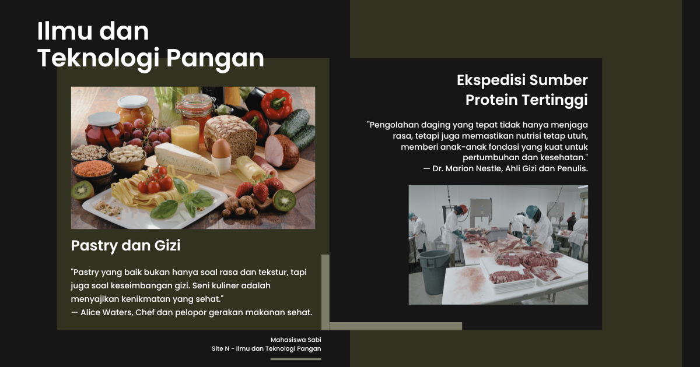

Keamanan Pangan
Keamanan Pangan: Pilar Penting Kesehatan dan Kesejahteraan
Keamanan pangan adalah aspek kritis dalam sistem pangan global yang bertujuan melindungi konsumen dari bahaya yang disebabkan oleh kontaminasi fisik, kimia, atau biologis. Penyakit bawaan makanan, seperti infeksi bakteri dan virus, dapat berdampak besar pada kesehatan masyarakat. Oleh karena itu, langkah-langkah preventif, seperti praktik kebersihan yang baik, pengolahan yang tepat, dan regulasi ketat dalam rantai pasokan pangan, sangat penting. Standar internasional seperti HACCP (Hazard Analysis and Critical Control Points) memainkan peran vital dalam mengurangi risiko ini.
Faktor-faktor Risiko Keamanan Pangan
- Kontaminasi Bakteriologis: Bakteri seperti Salmonella, E. coli, dan Listeria sering ditemukan dalam daging mentah, produk susu, dan sayuran yang tidak dicuci dengan baik. Mereka dapat menyebabkan keracunan makanan yang serius.
- Bahan Kimia Berbahaya: Pestisida, logam berat, dan residu antibiotik dalam produk hewani dapat masuk ke dalam rantai makanan dan menyebabkan masalah kesehatan kronis jika tidak dikendalikan dengan baik.
- Alergen dan Zat Berbahaya: Makanan yang mengandung alergen (seperti kacang atau susu) harus ditangani dengan sangat hati-hati untuk menghindari reaksi alergi yang parah.
Peran Pemerintah dan Regulasi
Pemerintah memiliki tanggung jawab besar dalam memastikan keamanan pangan. Di Indonesia, BPOM (Badan Pengawas Obat dan Makanan) bertugas mengawasi mutu produk pangan melalui peraturan perundangan. Selain itu, sertifikasi halal juga penting untuk memastikan keamanan dan kepercayaan konsumen terhadap produk yang dikonsumsi.
Di tingkat internasional, badan seperti FAO (Food and Agriculture Organization) dan WHO (World Health Organization) telah mengeluarkan panduan dan standar yang mendukung negara-negara dalam meningkatkan keamanan pangan.
Teknologi dalam Keamanan Pangan
Kemajuan teknologi telah memperkuat upaya keamanan pangan. Penggunaan blockchain memungkinkan pelacakan asal-usul produk pangan dari peternakan hingga meja makan, sehingga meningkatkan transparansi rantai pasokan. Selain itu, teknik pengawetan modern, seperti iradiasi dan penggunaan bahan pengawet alami, membantu memperpanjang umur simpan makanan tanpa merusak kualitasnya.
Tantangan Global
Seiring dengan pertumbuhan populasi dan perubahan iklim, menjaga keamanan pangan menjadi semakin kompleks. Perubahan iklim dapat mempengaruhi produksi pangan dan meningkatkan risiko kontaminasi patogen baru. Oleh karena itu, kolaborasi internasional sangat diperlukan untuk menciptakan sistem keamanan pangan yang tangguh dan berkelanjutan.
Kesimpulan
Keamanan pangan bukan hanya tentang mencegah kontaminasi atau keracunan, tetapi juga menjaga kepercayaan konsumen terhadap produk yang mereka konsumsi. Dengan regulasi yang ketat, teknologi canggih, dan kerja sama global, kita dapat memastikan bahwa pangan yang kita konsumsi tidak hanya aman tetapi juga berkualitas tinggi.
Mahasiswa Sabi
©Repository Muhammad Surya Putra Fadillah